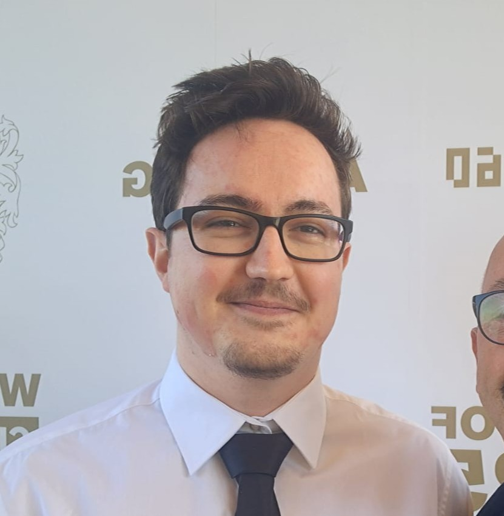

I'm Drew, an AI/ML engineer with a deep curiosity for intelligent systems and how they can adapt, learn, and interact with the world. With a Distinction in MSc Artificial Intelligence and a strong Computer Science foundation, I’ve built everything from reinforcement learning agents and neural network autograd engines to game environments and recommendation systems. I’m especially drawn to complex problem spaces — whether it’s debugging a stubborn model or designing agent behaviours from scratch. Outside of tech, I’m into bouldering, 3D printing, and exploring how GenAI systems can develop long-term memory and adaptive reasoning. I love building things that push boundaries and feel purposeful.
Experimenting with generative AI and Spotify’s API to build a smart music recommender that understands artists, moods, and moments. Designed with Streamlit for fast iteration and shareability.
Tech: Python, Streamlit, Spotify API
Click to learn more
Sharpening my machine learning skills through active participation in Kaggle challenges. Applying advanced techniques to real-world datasets in areas like prediction, classification, and NLP.
Tech: Python, scikit-learn, TensorFlow, Pandas
KaggleClick to learn more
I work comfortably across the full AI stack — from low-level NumPy and custom neural networks to high-level frameworks like Hugging Face and LangChain. I enjoy building both experimental models and deployable apps.
Python
Java
SQL
NumPy
Pandas
Seaborn
SQLite3
TensorFlow
Keras
PyTorch
scikit-learn
Hugging Face
LangChain
Git
GitHub
OCI
Jupyter Notebook
Google Colab
JetBrains suite
Jira
Neural Network Design
Reinforcement Learning
Genetic Algorithms
Predictive Analytics
RAG
LLMs
Data Preprocessing
Feature Engineering
Data Visualization
Developed AI driving models for TORCS using genetic algorithms and PPO, optimizing for complex behaviors.
Stack: Python, OpenAI Gym, StableBaselines3
Click to learn more
Built a Java-based game engine from scratch, later adopted for RL research by another MSc student.
Stack: Java
Click to learn more

Created a physics-based Angry Birds clone with custom mechanics and engaging gameplay.
Stack: Java, JBox2D
Click to learn more
Implemented autograd for neural networks using only NumPy, showcasing low-level ML expertise.
Stack: Python, NumPy
Click to learn more
MSc Artificial Intelligence, University of Essex, Oct 2023 - Oct 2024
Distinction (84%)
Relevant Modules: Machine Learning, Neural Networks and Deep Learning, Intelligent Systems and Robotics, Professional Practice and Research Methodology, Text Analytics, Game Artificial Intelligence, Physics-Based Games
BSc Computer Science, University of Essex, Oct 2020 - Jul 2023
Honours Class I (76%)
Dean’s List for Excellence (Years 1 and 2)
Relevant Modules: Evolutionary Computation and Genetic Programming, Languages and Compilers, Network Security, Algorithmic Game Theory, Computer Security, Data Structures and Algorithms, Computer Game Programming, Software Engineering